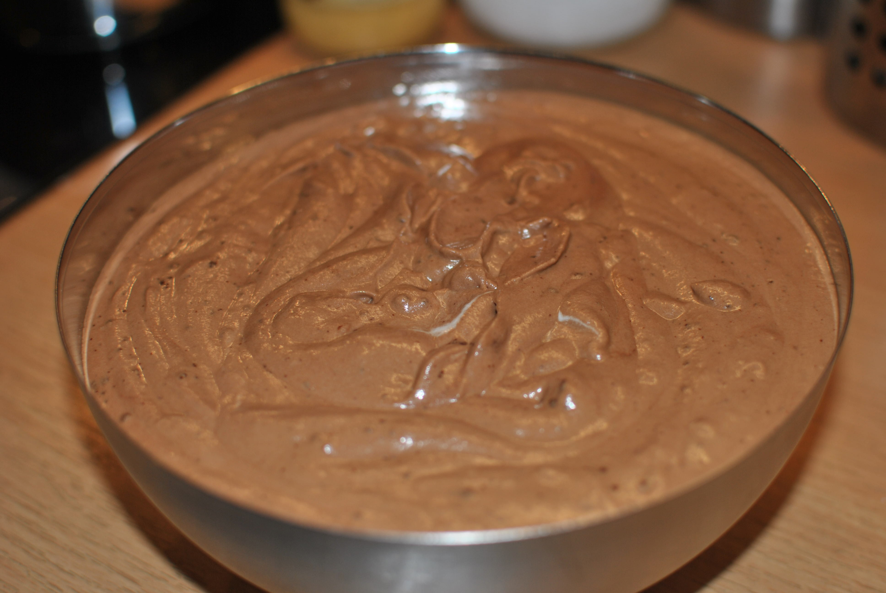

Gewürz-Schoko-Mousse

- Vorbereitungszeit: 30 Minuten
- Kühlzeit: mindestens 3 Stunden
- Für 8 Portionen
- Pro Portion ca. 680 kCal
Zutaten
- 300 g Zartbitter-Kuvertüre
- 2 Eier und 2 Eigelb
- 100 g Zucker
- 500 g Schlagsahne
- 1 TL Lebkuchengewürz
- 500 g Kumquats (ersatzweise 6 Mandarinen)
- 300 ml Orangensaft
- 300 g Zucker
- 2 Sternanis
Zubereitung
- Die Kuvertüre hacken und in einer Schüssel im warmen Wasserbad zerlassen. Die Eier trennen. Die Eiweiße steif schlagen, dabei 50 g Zucker einrieseln lassen. Die Sahne steif schlagen. Alle Eigelbe mit übrigem Zucker und dem Gewürz schaumig schlagen.
Die Kuvertüre mit dem Schneebesen unterheben, dann Sahne, danach den Eischnee. Mindestens 3 Stunden kaltstellen.
- Kumquats waschen und halbieren. Die Mandarinen schälen und in Segmente teilen. Die Kumquats mit Saft, Zucker und Sternanis circa 10 Minuten (Mandarinen 3 Minuten) köcheln. Kalt stellen.
- Zum Servieren von der Mousse Nocken abstechen und mit dem Kompott anrichten.